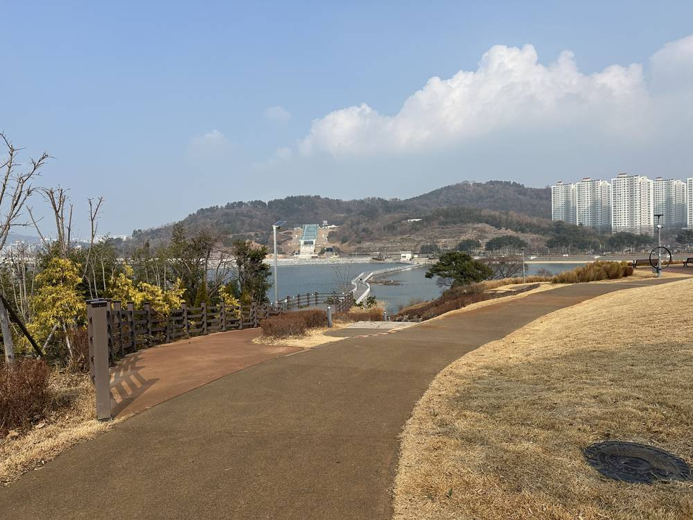

여수시, 유인도 40곳 에너지 전환 '2030 RE40' 추진…2027년부터 섬에도 공공부지 태양광·햇빛소득마을

계통 연계 섬 25곳·미연계 섬 15곳 맞춤 이행안…디젤 발전 줄여 섬 주민 전기요금 부담 낮춘다
전남 여수시가 화석연료에 기대는 섬 지역 전력 공급을 재생에너지 중심으로 바꾸는 '도서지역 에너지 전환, 2030 RE40'을 추진한다. 시는 사람이 사는 섬 40곳을 육지 전력망과 이어진 25곳과 이어지지 않은 15곳으로 나눠 섬마다 여건에 맞춘 이행 방안을 세웠다. 우선 지금 하고 있는 주택 재생에너지 지원사업과 융복합 지원사업을 넓히고, 2027년부터는 공공부지 태양광과 주민참여형 햇빛소득마을을 섬에 들여 해마다 자립 기반을 쌓을 계획이다. 중장기로는 정부의 섬종합발전계획과 도서지역 에너지 전환 공모가 나오면 참여해 재생에너지와 에너지저장장치(ESS)를 묶은 설비를 단계적으로 늘린다. 시는 디젤 발전 의존을 줄이면 온실가스와 대기오염이 줄고 섬 주민의 전기요금 부담과 정주 여건도 나아질 것으로 보고 있다.
시민에너지 관점
디젤로 전기를 만드는 섬은 연료를 배로 실어 날라야 해 발전 단가가 육지보다 훨씬 비싸고, 그 비용과 매연을 주민이 떠안는다. 덴마크 삼쇠섬은 주민이 풍력과 지역난방을 직접 소유해 에너지 자립 섬이 됐고, 그 수익이 섬에 남아 공동체를 지키는 힘이 됐다. 여수의 계획이 보조금 설비를 보급하는 데 그치면 주민은 다시 소비자로만 남는다. 2027년 섬 햇빛소득마을부터 주민 협동조합이 설비를 소유하고, 남는 전기 판매 수익을 섬 공동체 기금으로 쌓는 구조를 처음부터 넣어야 한다.
출처: 뉴스깜 2026-11-11 이기장 원문 보기
麗水市、有人島40カ所のエネルギー転換「2030 RE40」を推進…2027年から島にも公有地太陽光・太陽光所得村
系統連系の島25カ所・非連系の島15カ所に合わせた実行案…ディーゼル発電を減らし島民の電気料金負担を軽く
全羅南道麗水（ヨス）市が、化石燃料に頼る島しょ地域の電力供給を再生可能エネルギー中心に切り替える「島しょ地域エネルギー転換、2030 RE40」を推進する。市は人が住む島40カ所を、本土の電力網とつながる25カ所とつながっていない15カ所に分け、島ごとの条件に合わせた実行案をまとめた。まず現在進めている住宅向け再エネ支援事業と融複合支援事業を広げ、2027年からは公有地の太陽光と住民参加型の太陽光所得村を島に導入し、年ごとに自立の基盤を積み上げる計画だ。中長期的には、政府の島総合発展計画や島しょ地域エネルギー転換の公募が出れば参加し、再エネとエネルギー貯蔵装置（ESS）を組み合わせた設備を段階的に増やす。市はディーゼル発電への依存を減らせば温室効果ガスと大気汚染が減り、島民の電気料金負担や定住環境も改善するとみている。
市民エネルギーの視点
ディーゼルで電気をつくる島は燃料を船で運ばなければならず、発電単価が本土よりはるかに高く、そのコストと排ガスを住民が背負っている。デンマークのサムソ島は住民が風力と地域暖房を自ら所有してエネルギー自立の島となり、その収益が島に残って共同体を支える力になった。麗水の計画が補助金による設備の普及にとどまれば、住民は再び消費者としてだけ残る。2027年の島の太陽光所得村から、住民の協同組合が設備を所有し、余剰電力の販売収益を島の共同体基金として積み立てる仕組みを最初から組み込むべきだ。
出典: 뉴스깜 2026-11-11 이기장 原文を読む
丽水市推进40座有人岛能源转型“2030 RE40”，2027年起在岛上推广公有地光伏和阳光收入村
针对25座并网岛屿和15座离网岛屿分别制定实施方案；减少柴油发电，减轻岛民电费负担
韩国全罗南道丽水市将推进“岛屿地区能源转型2030 RE40”，把依赖化石燃料的岛屿供电体系转向以可再生能源为主。该市将40座有人居住的岛屿分为与陆地电网相连的25座和未联网的15座，按各岛条件制定了实施方案。短期内将扩大现有的住宅可再生能源补助项目和融合补助项目，从2027年起在岛上引入公有地光伏和居民参与型“阳光收入村”，逐年夯实能源自立基础。中长期则在政府推出岛屿综合发展计划和岛屿地区能源转型公开征集时积极参与，分阶段增加可再生能源与储能（ESS）相结合的设施。该市认为，减少对柴油发电的依赖既能降低温室气体和大气污染物排放，也能减轻岛民电费负担、改善居住条件。
市民能源视角
依靠柴油发电的岛屿必须用船运送燃料，发电成本远高于陆地，这些成本和废气都由居民承担。丹麦萨姆索岛由居民直接拥有风电和区域供热，成为能源自给岛，收益留在岛上，成为支撑社区的力量。如果丽水的计划只停留在用补贴推广设备，居民仍将只是消费者。从2027年的岛屿阳光收入村开始，就应让居民合作社拥有设施，并把余电销售收益积累为岛屿社区基金。
来源: 뉴스깜 2026-11-11 이기장 查看原文
Yeosu Launches '2030 RE40' Energy Transition for Its 40 Inhabited Islands, Bringing Public-Land Solar and Sunlight Income Villages from 2027
Separate plans for 25 grid-connected and 15 off-grid islands aim to cut diesel generation and islanders' power bills
Yeosu City in South Jeolla Province will pursue "Island Energy Transition, 2030 RE40," shifting power supply on its islands away from fossil fuels toward renewables. The city has split its 40 inhabited islands into 25 connected to the mainland grid and 15 that are not, and drawn up plans suited to each. In the short term it will expand existing support programs for household and combined renewable installations, and from 2027 it will bring public-land solar and resident-participation sunlight income villages to the islands, building self-sufficiency year by year. Over the longer term the city will join government programs such as the comprehensive island development plan and any island energy transition competition, gradually adding facilities that pair renewables with energy storage systems (ESS). The city expects less reliance on diesel generators to cut greenhouse gases and air pollution while easing islanders' electricity bills and improving living conditions.
Citizen Energy View
Islands that burn diesel for power must ship in fuel, so generation costs far more than on the mainland, and residents bear both the cost and the fumes. On Denmark's Samsø, residents own the wind turbines and district heating; the island became energy self-sufficient and the income stayed local, sustaining the community. If Yeosu's plan only spreads subsidized equipment, islanders will remain mere consumers. From the first island sunlight income villages in 2027, resident cooperatives should own the facilities and bank revenue from surplus power in island community funds.
Source: 뉴스깜 2026-11-11 이기장 Read the original